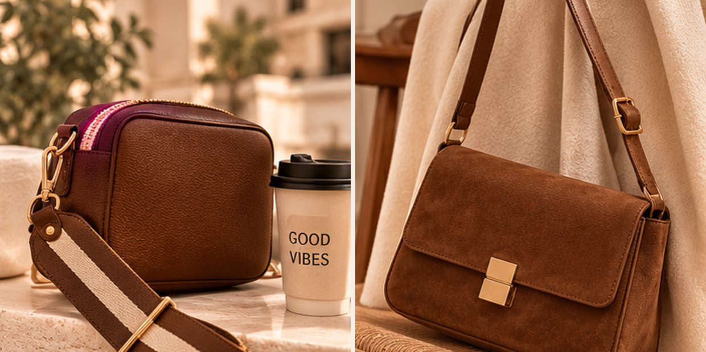
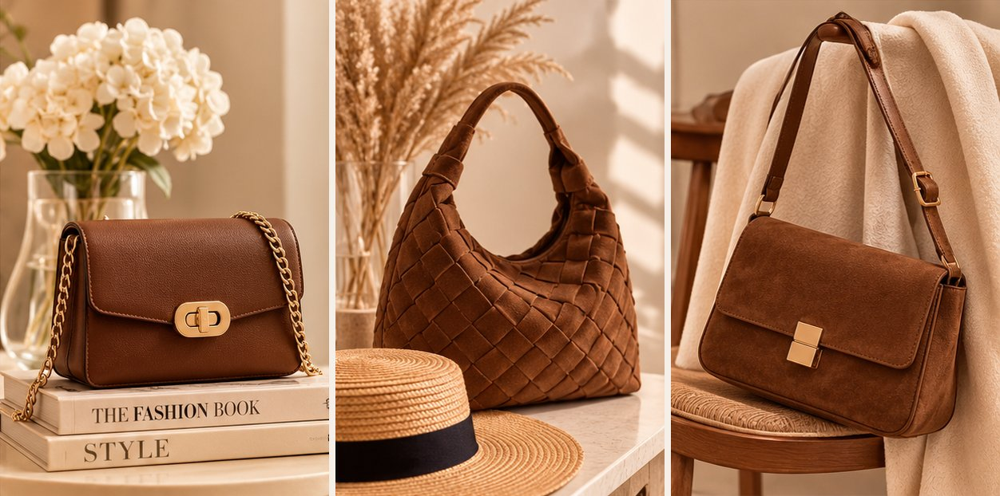

Black Friday accessories worth buying: a 10-piece checklist

Style inspiration by Beauty & You.
Black Friday is the best time of year to invest in accessories you'll wear for years. Instead of buying whatever is on sale, use this checklist of timeless pieces that look expensive and make every outfit feel finished.
Disclosure: this page contains Amazon affiliate links. As an Amazon Associate I earn from qualifying purchases, at no extra cost to you.
See all Black Friday deals on AmazonOur top picks right now
Two pieces we chose for great reviews, a timeless look and an easy price.

Mood images for styling inspiration. They are not photos of the products below.
Bag pick
Gladdon foldover crossbody bag
A light, soft vegan-leather bag in a warm brown. It has several pockets, and the detachable strap lets you wear it as a crossbody, a shoulder bag or a clutch. A popular, well-reviewed everyday bag.
Check the price on AmazonJewelry pick
Yesteel 9-pair gold-plated hoop set
Nine pairs of hypoallergenic 14k gold-plated hoops, from small huggies to chunky and twisted styles, so you have a pair for every outfit. Also comes in silver and rose gold. A lovely gift idea, too.
Check the price on AmazonThe 10-piece checklist
1. A structured leather tote
The one bag that works for the office, travel and weekends. Look for real or good-quality vegan leather, a zip top and a flat base that stands on its own.
See options on Amazon2. A small crossbody bag
Hands-free and easy to dress up or down. Neutral colours like camel, black or cream go with almost everything.
See options on Amazon3. Gold-tone hoop earrings
A small pair of hoops makes any outfit look finished. Check that they are hypoallergenic or plated sterling silver.
See options on Amazon4. A delicate layering necklace
Thin chains layered together look elegant and expensive. Choose 14k gold-plated or stainless steel so they don't tarnish quickly.
See options on Amazon5. A minimalist watch
A slim face and a leather or mesh strap never go out of style. It makes a great gift, too.
See options on Amazon6. A soft winter scarf
A large, soft scarf in a neutral colour lifts a simple coat. Check the material: wool or cashmere blends are warmer than acrylic.
See options on Amazon7. Classic sunglasses
Tortoiseshell or black frames suit almost everyone. Always look for UV400 protection.
See options on Amazon8. A slim leather belt
A thin belt in black or cognac defines the waist on dresses, coats and jeans.
See options on Amazon9. Hair accessories
Claw clips, satin scrunchies and pearl clips are small, affordable and look polished.
See options on Amazon10. An evening clutch
Ready for weddings and holiday parties. Gold, silver or black goes with most evening outfits.
See options on AmazonHow to spot a real deal
- Make a list first. Decide what you need before the sales start, so you don't buy on impulse.
- Check the reviews. Look for comments about quality, size and colour, and photos from real buyers.
- Read the material. Leather, stainless steel and plated sterling silver last longer than cheap alloys.
- Check the return policy. Make sure returns are easy in case something doesn't fit your style.
- Shop early. Popular colours and styles sell out fast.
Want more ideas? Read our guides to everyday bags, minimal jewelry and elegant watches.